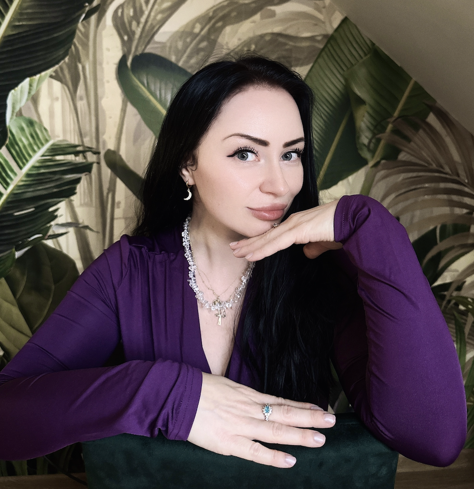
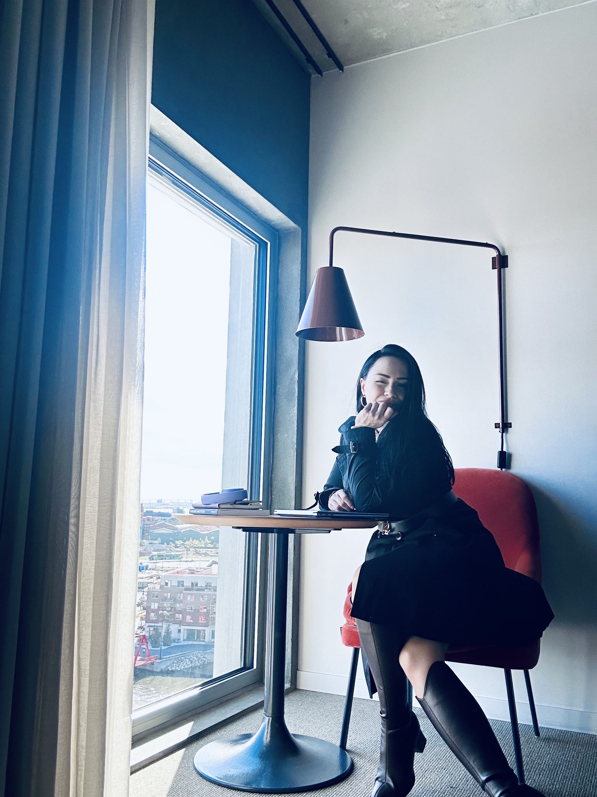
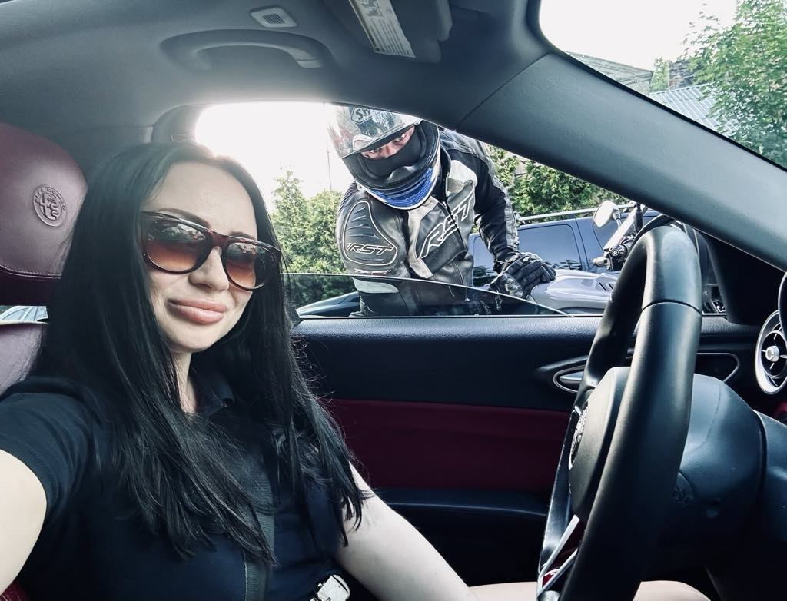

01.
Zbudowałam karierę w IT od nowa.
Dziś specjalizuję się w AI i cyberbezpieczeństwie.
Kobieta stojąca za marką
Inżynierka. Strateg. Przedsiębiorczyni. Kobieta, która nie wierzy, że w życiu trzeba ograniczać się do jednej roli.


Moja historia
Kilka lat temu jako samotna mama podjęłam decyzję o przebranżowieniu się do IT. Chciałam rozwijać się zawodowo i zapewnić sobie oraz synowi lepszą przyszłość.
Pracowałam po godzinach, brałam nocne dyżury i zdobywałam kompetencje w świecie technologii.
ALE… czy właśnie tak ma wyglądać całe moje życie?
Zrozumiałam, że dobre zarobki to tylko część układanki. Chciałam również czasu, swobody i możliwości tworzenia czegoś własnego.

Przenieśmy się do dzisiaj
Zajmuję się AI i cyberbezpieczeństwem. Występuję na konferencjach, rozwijam wiedzę o finansach, buduję własne marki i pracuję nad książkami.
Stworzyłam Ponadprzeciętną, aby pomagać kobietom świadomie projektować swoją przyszłość.
Niezależność finansową kobiet. Nieustanną naukę. Odwagę do zaczynania od nowa. Łączenie logiki z intuicją.
Jeden słuszny scenariusz życia. Sukces kosztem zdrowia i rodziny. Czekanie na idealny moment.
Jeśli myślisz podobnie, prawdopodobnie świetnie się zrozumiemy.
Poznaj mnie z innej strony
01.
Dziś specjalizuję się w AI i cyberbezpieczeństwie.

02.
Lubię tłumaczyć skomplikowane zagadnienia technologiczne w przystępny sposób.

03.
Studiuję bankowość inwestycyjną w SGH, a moja praca dyplomowa dotyczy AI i blockchain w finansach.

04.
Interesuje mnie również duchowość, symbolika i praca z przekonaniami.

05.
Chcę pisać o pieniądzach, karierze, możliwościach i własnym potencjale.

06.
Jestem mamą. Macierzyństwo było jednym z powodów, dla których zawalczyłam o większą niezależność.
Poza kulisami


Konferencje technologiczne · Wystąpienia eksperckie · Warsztaty
Zaproś mnie na wydarzenieNie musisz wybierać, kim jesteś
Nigdy nie chciałam zamykać się w jednej definicji siebie. I nie uważam, że Ty powinnaś.

Moja misja
Niezależnie od tego, skąd pochodzą, ile mają lat i jak wyglądało ich dotychczasowe życie.
Właśnie dlatego powstała Ponadprzeciętna.
Odkryj Ponadprzeciętną